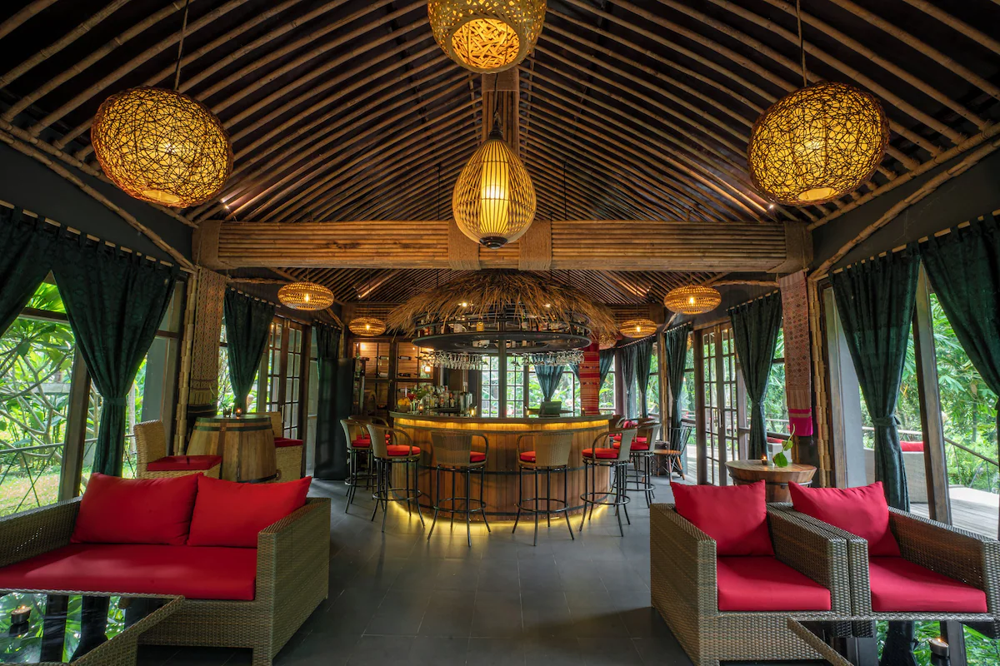
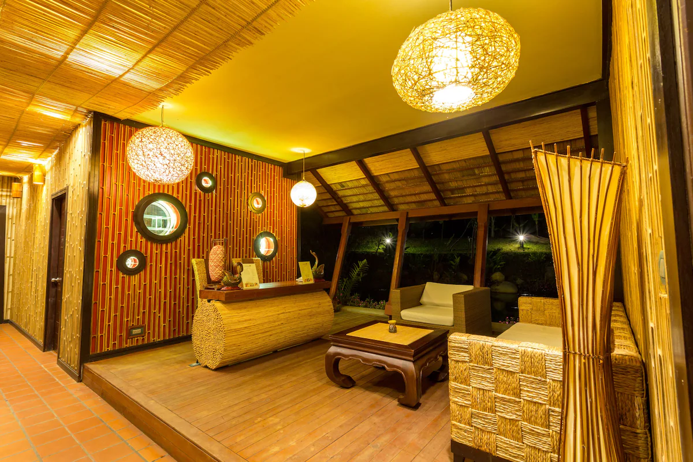
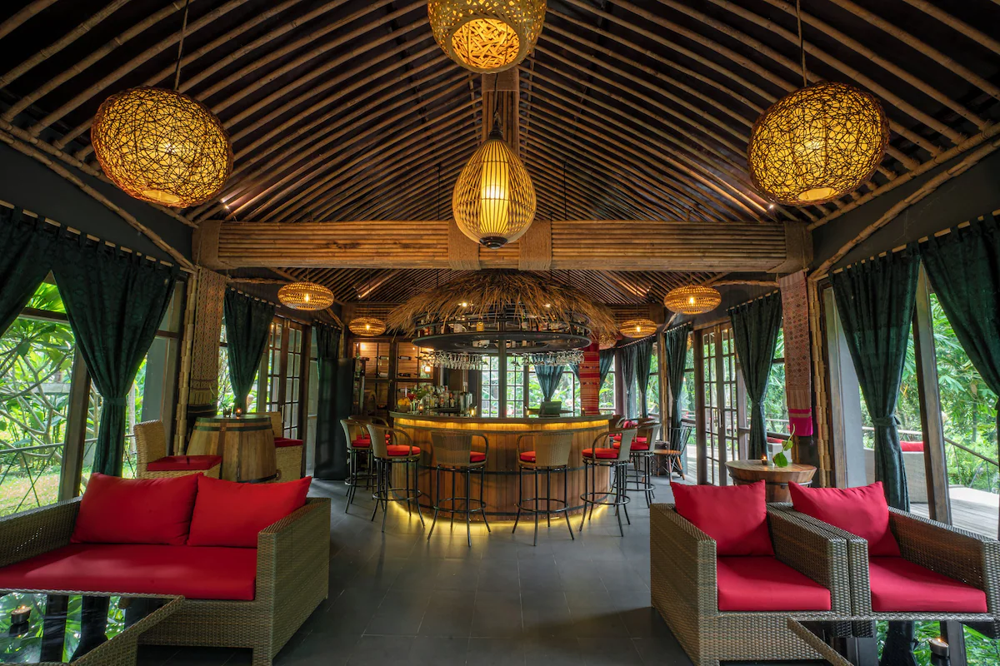
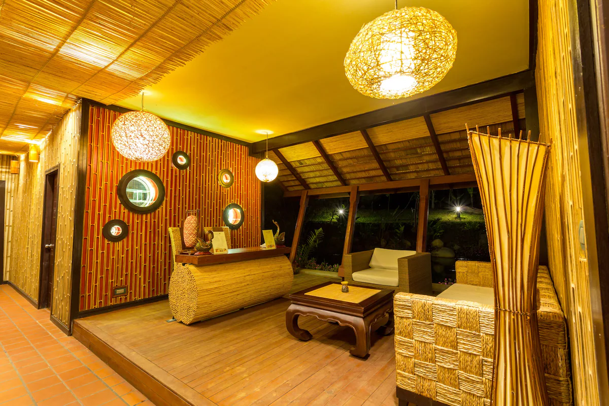

ຖ້ຳຈອມອອງ
ເປັນຖ້ຳທີ່ໃຫຍ່ທີ່ສຸດແຫ່ງໜຶ່ງໃນພາກເໜືອຂອງລາວ. ມັນມີຄວາມຍາວຫຼາຍກວ່າ 13.5 ກິໂລແມັດ ແລະມີຫີນງອກຫີນຍ້ອຍ ທີ່ສວຍງາມແລະຫນ້າປະຫລາດໃຈພາຍໃນຖ້ໍາ. ຖືວ່າເປັນແຫຼ່ງທ່ອງທ່ຽວແບບນິເວດທີ່ນິຍົມ. ເຈົ້າສາມາດສຳຫຼວດຖ້ຳ, ຍ່າງປ່າ, ຫຼືຢູ່ໃນເຮືອນພັກກັບຊາວທ້ອງຖິ່ນໃນໝູ່ບ້ານໃກ້ຄຽງເພື່ອຮຽນຮູ້ກ່ຽວກັບວັດທະນະທຳຂະມຸ.
ນ້ຳຕົກນ້ຳກັດ
ນີ້ແມ່ນເຂດປ່າສະຫງວນຕາມລຳນ້ຳກັດ. ມີນ້ໍາຕົກທີ່ສວຍງາມແລະກິດຈະກໍາການຜະຈົນໄພຫຼາຍຢ່າງເຊັ່ນ: ziplining, trekking, ຂີ່ ATV ແລະຍ່າງຂ້າມຂົວຟ້າ. ມັນເປັນສະຖານທີ່ທີ່ເຫມາະສົມສໍາລັບຜູ້ທີ່ຮັກທໍາມະຊາດແລະກິດຈະກໍາກາງແຈ້ງ.
 



ນ້ຳກັດຍໍລະປາ ຣີສອດ
ທີ່ນໍ້າກັດຢໍລະປາຣີສອດ, ທ່ານສາມາດເພີດເພີນກັບລະບຽງ. ການໄປຊື້ເຄື່ອງຢູ່ໃນທີ່ພັກ ແລະຮ້ານກາເຟ/ຄາເຟ ນັກທ່ອງທ່ຽວທີ່ຫ້າວຫັນສາມາດເພີດເພີນໄປກັບການປີນໜ້າຜາ, ຖີບລົດ ແລະຂີ່ລົດຖີບພູເຂົາຢູ່ໂຮງແຮມນີ້. ສຳລັບໃຜທີ່ຢາກຜ່ອນຄາຍ ລອງໃຊ້ຫ້ອງຊາວນາ ແລ້ວຜ່ອນຄາຍດ້ວຍການບຳບັດດ້ວຍກິ່ນຫອມ, ຂັດຜິວ ຫຼືບໍລິການນວດ. ເພີດເພີນໄປກັບອາຫານເຊົ້າ, ອາຫານທ່ຽງ, ອາຫານທ່ຽງ, ຄ່ໍາແລະອາຫານຕ່າງປະເທດທີ່ 2 ຮ້ານອາຫານຢູ່ໃນສະຖານທີ່. Wi-Fi ຟຣີໃນຫ້ອງແມ່ນມີໃຫ້ສຳລັບແຂກທຸກຄົນ. ມີສວນແລະສະຫນາມເດັກຫຼິ້ນ
ຫໍພິພິທະພັນອຸດົມໄຊ
ນີ້ແມ່ນບ່ອນທີ່ເຈົ້າສາມາດຮຽນຮູ້ປະຫວັດສາດ ແລະ ວັດທະນະທໍາຂອງແຂວງອຸດົມໄຊ.